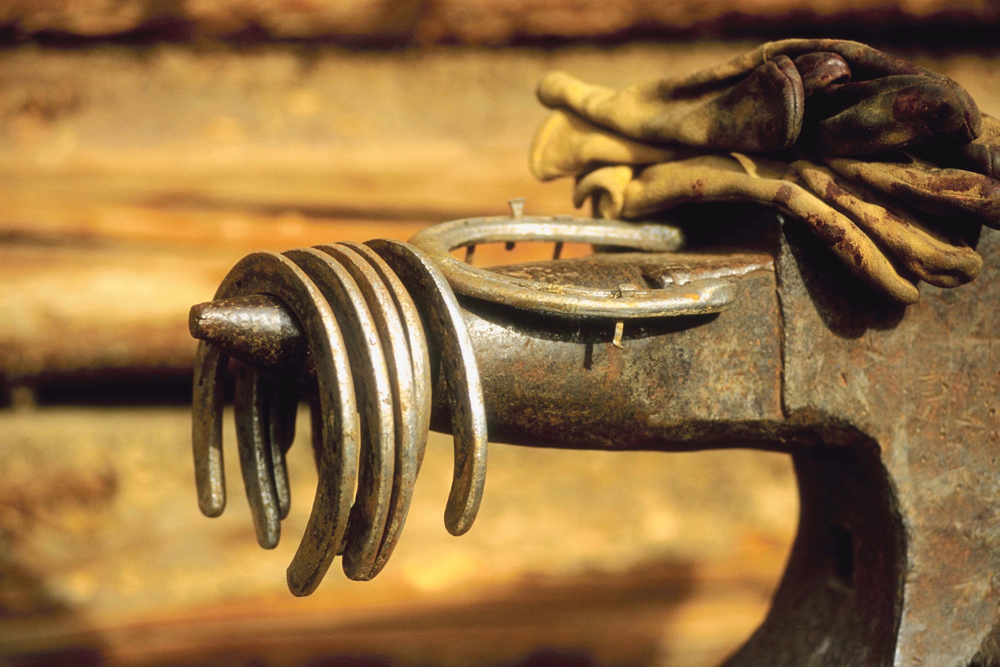

When your horse needs new shoes, accuracy and precision are very important because in order for your horse to get well-made shoes that protect hooves, feet and legs. There are great stresses that the shoe must withstand in order to protect the hooves and legs every day.
Experience is important when you don't want to compromise on the quality of your horse's shoes. Over ten years of experience in farriery. Basic education and further education with completed journeyman's certificate and a period as an apprentice. All so that you can feel safe that your horse is receiving the best care. The fact that I compete in blacksmithing is because it is so much fun and also comes in handy for the more challenging shoe jobs.
Being a member of both of our Swedish industry organizations is a matter of course for me.
The trade association District Farriers (DH) protects the interests of professional farriers. Requirements for membership are that you hold an F tax slip and individual liability insurance. An older, but not pronounced, trade organization is Swedish
The Farriers' Association (SHF) protects the craft within the profession and arranges and organizes craft competitions within the profession. SHF requires that members have an education that is approved by Sweden's farrier association. In order to approve a training, the SHF association requires full transparency in the training and the right to examination. Hence, there are several educations that are not approved by SHF, even though they are approved by authorities.